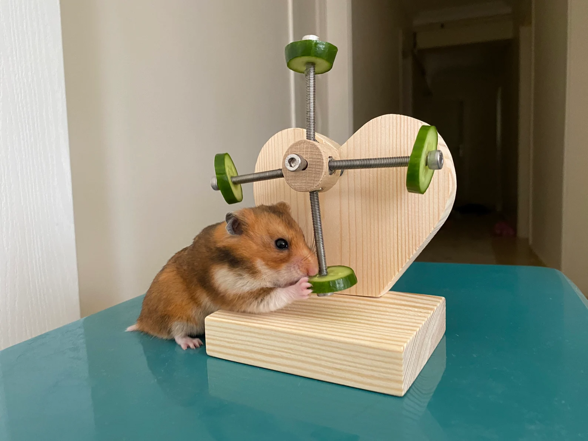

Hamster's After-school Snack!

Description
Did you know that hamsters store food in their pouches? Here's how you can make a hamster-friendly snack that your pet can store for hours!
Ingredients
- Some dried organic veggies
- Dried fruits such as peaches, strawberries
- Dried herbs
- Rose petals
Steps
- Combine all the ingredients above in a food processor.
- To prepare, add warm water.
- Leave to soak for 5 minutes.
- (Optional) Add any additional toppings, such as flax seeds.
- You're good to go!
Return to Main Page
Return to Top